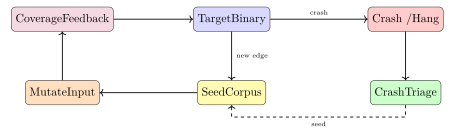

Chapter 23: Vulnerability Research and Fuzzing¶
Vulnerability research is the systematic practice of discovering, analysing, and responsibly disclosing security weaknesses in software, hardware, and protocols. It underpins every other area of offensive and defensive security: without a solid understanding of how vulnerabilities arise, defenders cannot build effective mitigations and attackers cannot be studied empirically.
23.1 The Vulnerability Lifecycle¶
A vulnerability does not spring into existence at the moment it is discovered; it already exists in deployed systems, waiting. The vulnerability lifecycle describes the stages from initial discovery through remediation.
Definition 23.1 (Vulnerability Lifecycle)
The vulnerability lifecycle comprises the following stages:
-
Discovery – A researcher, attacker, or automated tool identifies a potential weakness in a target.
-
Analysis – The weakness is confirmed to be exploitable; root cause, impact, and affected versions are determined.
-
Proof-of-Concept (PoC) – A minimal, demonstrable exploit is constructed to validate exploitability.
-
Disclosure – The vulnerability is reported to the vendor (and/or the public) according to the chosen disclosure policy.
-
Patch Development – The vendor engineers and tests a fix.
-
CVE Assignment – MITRE assigns a CVE identifier; NIST NVD publishes the CVSSv3.1 score.
-
Patch Deployment – Operators apply the patch; the patch gap (time between release and deployment) is a prime attack window.
23.1.1 Disclosure Policies¶
Three disclosure philosophies compete in practice:
- Responsible (Coordinated) Disclosure
- The researcher notifies the vendor privately and allows a fixed embargo period (typically 90 days, as established by Google Project Zero) before public release. This balances vendor time-to-fix against the public’s right to know.
- Full Disclosure
- Details and PoC are released immediately without prior vendor notification. Proponents argue it maximises pressure to patch; opponents note it gives no remediation window.
- Bug Bounty Programs
- Vendors offer monetary rewards for responsible disclosure via platforms such as HackerOne and Bugcrowd. Researchers receive compensation while the vendor retains control over timing.
Zero-Day Markets
Vulnerabilities for which no patch exists (zero-days) are traded on grey and black markets. Government agencies (NSA, GCHQ) and brokers (Zerodium) pay millions of dollars for high-quality exploits, creating incentive structures that compete with responsible disclosure.
23.1.2 Bug Bounty Programs in Depth¶
Bug bounty programs have matured from informal arrangements into a structured industry worth hundreds of millions of dollars annually. Understanding how they work matters whether you’re submitting reports or running a programme.
Private vs. public programmes. Most vendors launch private first, inviting a curated set of researchers under NDA while the programme is still maturing. Private programmes give the vendor time to fix high-severity findings before a public announcement; researchers get access to a less-competed target. Once the triage backlog stabilises, the programme goes public and any researcher can submit. Apple Security Research Device Programme and Meta’s bug bounty are examples of well-run private-to-public transitions.
Bounty tiers. Payouts correlate with severity and impact, but the ranges vary enormously:
| Severity | Typical Range | Example |
|---|---|---|
| Critical (RCE, auth bypass) | $10,000–$1,000,000+ | Apple pays $1M for zero-click kernel RCE |
| High (privilege escalation, data breach) | $5,000–$50,000 | Google $30k for Android PE |
| Medium (stored XSS, SSRF) | $1,000–$10,000 | Bug-specific |
| Low (self-XSS, info disclosure) | $150–$1,000 | Volume submissions |
Scope documents define what is and isn’t permitted. In-scope sections list the specific domains, IP ranges, or application features the vendor wants tested. Out-of-scope sections prohibit actions like social engineering employees, physical access, DoS attacks, and testing third-party infrastructure. Exceeding scope—even accidentally—can result in legal action regardless of the bug bounty’s existence.
Disclosure timelines. The 90-day standard established by Google Project Zero (introduced in 2014) has become industry-accepted: if the vendor hasn’t produced a patch within 90 calendar days, the researcher publishes. Some vendors negotiate extensions for particularly complex fixes; others don’t engage at all. CERT/CC and other coordination bodies can act as intermediaries when a vendor is unresponsive, escalating toward public disclosure to create pressure.
The distinction between responsible disclosure, coordinated vulnerability disclosure (the ISO/IEC 29147 standard term), and full disclosure matters legally. Coordinated disclosure includes the vendor in the process from the start and allows them a reasonable remediation window. Full disclosure bypasses this, which in some jurisdictions can expose the researcher to liability even if the vulnerability is real. Researchers should read the programme’s legal safe-harbour clause carefully—most major platforms (HackerOne, Bugcrowd) include boilerplate that grants legal protection for good-faith testing within scope.
23.2 CVE and CVSSv3.1 Scoring¶
The Common Vulnerability Scoring System v3.1 (CVSSv3.1) provides a standardised numerical score (0.0–10.0) capturing both the technical characteristics of a vulnerability and its contextual severity.
Definition 23.2 (CVSSv3.1 Base Metrics)
The base score is derived from eight metrics grouped into two areas:
-
Exploitability: Attack Vector (AV), Attack Complexity (AC), Privileges Required (PR), User Interaction (UI).
-
Impact: Scope (S), Confidentiality (C), Integrity (I), Availability (A).
Each metric takes a set of discrete values; the resulting formula produces a score mapped to None / Low / Medium / High / Critical.
23.2.1 Log4Shell: A Worked CVSSv3.1 Example¶
CVE-2021-44228 (Log4Shell) affected Apache Log4j 2.x and allowed unauthenticated remote code execution via a crafted JNDI lookup string in any logged value.
CVE-2021-44228 CVSSv3.1 Vector
CVSS:3.1/AV:N/AC:L/PR:N/UI:N/S:C/C:H/I:H/A:H
| AV:N | Attack Vector = Network (exploitable remotely) |
| AC:L | Attack Complexity = Low (no special conditions) |
| PR:N | Privileges Required = None |
| UI:N | User Interaction = None |
| S:C | Scope = Changed (impact extends beyond vulnerable component) |
| C:H | Confidentiality = High |
| I:H | Integrity = High |
| A:H | Availability = High |
Base Score: 10.0 Critical
23.2.2 CVSS v4.0 and EPSS¶
CVSS v4.0, released by FIRST in November 2023, addresses several criticisms of v3.1 that practitioners had raised over the preceding six years.
The most significant structural change is the replacement of the Temporal metric group with a Threat metric group containing a single metric: Exploit Maturity (values: Unreported, Proof-of-Concept, Attacked). This aligns the metric with observable threat intelligence—if active exploitation in the wild is confirmed, Exploit Maturity is set to Attacked, raising the effective score. The old Temporal metrics (Exploitability, Remediation Level, Report Confidence) mapped poorly to real-world data sources, so most organisations left them at defaults, rendering Temporal scores meaningless.
CVSS v4.0 also adds a Supplemental metric group that provides additional context without affecting the numeric score:
-
Safety: whether exploitation could cause physical harm to people (relevant for ICS/SCADA and medical devices).
-
Automatable: whether the exploitation steps can be fully automated (wormable vulnerabilities score Yes).
-
Recovery: whether the system returns to its pre-exploit state automatically, manually, or not at all.
-
Value Density: whether a single exploit delivers diffuse or concentrated impact (a cloud hypervisor vulnerability has high value density; a single-user desktop vulnerability has low).
The Scope Changed ambiguity—where v3.1’s S:C was interpreted inconsistently across vendors—is resolved in v4.0 by explicitly modelling the Subsequent System (downstream components affected by exploitation) separately from the Vulnerable System (the component containing the bug). This produces cleaner, more consistent scoring across CVEs.
EPSS (Exploit Prediction Scoring System), maintained by FIRST, is increasingly used alongside CVSS for prioritisation. While CVSS measures severity—how bad exploitation would be—EPSS measures likelihood: the probability that a given CVE will be actively exploited in the wild within 30 days of its publication. EPSS is a machine-learning model trained on real exploitation data (Shadowserver, GreyNoise, and other threat intel feeds) and updated daily.
In practice, the combination of CVSS and EPSS is more actionable than either alone. A CVE-2024-1234 might score 9.8 on CVSS (Critical severity) but have an EPSS score of 0.002 (0.2% exploitation probability), meaning the severity is high but attackers aren’t actually using it. CVE-2024-5678 might score 7.5 (High severity) but have an EPSS of 0.61 (61% exploitation probability), meaning it’s actively weaponised. Any rational patching prioritisation should address the second CVE first. Organisations integrating EPSS into their vulnerability management workflows have reported measurably improved mean time to remediation for actively exploited CVEs.
23.3 Fuzzing¶
Fuzzing (fuzz testing) supplies malformed, unexpected, or semi-random inputs to a target program and monitors for crashes, hangs, or other anomalous behaviour. It remains one of the most productive bug-finding techniques per engineering hour.
Definition 23.3 (Dumb vs. Coverage-Guided Fuzzing)
- Dumb Fuzzing
- Inputs are generated or mutated without feedback from the target. Simple and fast to set up; poor at reaching deep code paths.
- Coverage-Guided Fuzzing
- The fuzzer instruments the target to measure code coverage (edge/branch coverage). Inputs that discover new coverage are retained in the corpus and mutated further. Examples: AFL++, LibFuzzer, honggfuzz.
23.3.1 AFL++ Workflow¶
AFL++ (American Fuzzy Lop++) is the de facto standard for binary and source-level coverage-guided fuzzing.
# Compile target with AFL++ instrumentation
CC=afl-clang-fast CXX=afl-clang-fast++ ./configure && make
# Run fuzzer: corpus in, findings out, target reads from @@
afl-fuzz -i corpus/ -o findings/ -- ./target @@
# Parallel fuzzing: one main, N secondary instances
afl-fuzz -M main -i corpus/ -o findings/ -- ./target @@
afl-fuzz -S sec01 -i corpus/ -o findings/ -- ./target @@
# Triage crashes
afl-triage -i findings/default/crashes/ -- ./target @@
AFL++ output includes: total execs/sec, coverage (edges found), number of crashes, and number of hangs. A healthy campaign shows steadily increasing edge count; a plateau suggests corpus exhaustion or a hard-to-reach code path.
23.3.2 Coverage-Guided Fuzzing Internals¶
AFL++ instruments the target at compile time by inserting a short callback at every basic block edge—the transition between each pair of consecutive basic blocks in the control flow graph. At runtime, this callback XORs the current block’s ID with the previous block’s ID and increments a counter in a 64 KB shared memory bitmap that both the fuzzer process and the target process map. After each test case execution, the fuzzer inspects the bitmap: if any counter changed that wasn’t set in previous runs, the input discovered new coverage and is added to the corpus. Inputs that exercise no new edges are discarded.
This feedback loop is what makes AFL++ dramatically more effective than dumb fuzzing. A dumb fuzzer that flips random bits can run for days without reaching a deeply nested error-handling path that requires the first four bytes of input to spell PNG\x89. A coverage-guided fuzzer discovers the magic byte check on the first run that happens to get the header right, adds that input to the corpus, and from then on only mutates inputs that already pass the check—converging on deep paths orders of magnitude faster.
The QEMU mode (afl-fuzz -Q) instruments binaries at the basic block level without source code, using QEMU’s dynamic translation layer. Coverage is coarser than source instrumentation but still dramatically outperforms dumb fuzzing on closed-source targets.
Grammar-based fuzzing takes a different approach for protocols with strict structure. Tools like Boofuzz and Peach (now open-sourced as Peach Community) model the protocol message format as a tree of typed fields—integers, strings, arrays—and mutate each field independently while keeping the surrounding structure valid enough for the target to parse. This reaches code paths that random mutation never would, because a randomly mutated TLS ClientHello is almost always rejected at the record-layer length check before any interesting parsing happens. Grammar-based fuzzing trades breadth of coverage for depth in specific protocol paths; combining it with AFL++ (using grammar-generated seeds as the initial corpus) gives both.
23.3.3 Mutation Strategies and Corpus Management¶
AFL++ employs bitflip, byte arithmetic, havoc (random), and splice mutations. Effective corpus management involves:
-
Minimising the initial seed corpus (
afl-cmin) to remove redundant seeds. -
Minimising individual crashing inputs (
afl-tmin) for analysis. -
Periodically harvesting crash inputs as new seeds.
23.3.4 Sanitizers¶
Sanitizers are compiler-inserted runtime checks that surface bugs that would otherwise be silent:
| Sanitizer | Flag | Detects |
|---|---|---|
| AddressSanitizer (ASan) | -fsanitize=address |
Buffer overflows, UAF, heap-buffer-overflow |
| UndefinedBehaviorSanitizer (UBSan) | -fsanitize=undefined |
Integer overflow, null-ptr deref |
| MemorySanitizer (MSan) | -fsanitize=memory |
Uninitialised memory reads |
| ThreadSanitizer (TSan) | -fsanitize=thread |
Data races |
Always fuzz with ASan+UBSan enabled; this dramatically increases bug yield.

23.4 Binary Analysis: Symbolic Execution¶
Definition 23.4 (Symbolic Execution)
Symbolic execution explores program paths by treating inputs as symbolic variables rather than concrete values. A constraint solver (typically Z3) determines which concrete inputs satisfy path conditions.
Tools include angr (Python), KLEE (LLVM IR), and Triton (dynamic symbolic execution).
import angr
project = angr.Project('./crackme', auto_load_libs=False)
state = project.factory.entry_state()
simgr = project.factory.simulation_manager(state)
# Explore: reach 0x401234, avoid 0x401500 (bad path)
simgr.explore(find=0x401234, avoid=0x401500)
if simgr.found:
solution = simgr.found[0]
print(solution.posix.dumps(0)) # stdin that reaches target
23.4.1 Path Explosion Problem¶
The fundamental limitation of symbolic execution is path explosion: the number of distinct paths through a program grows exponentially with loops and branches. Mitigation strategies include:
-
Veritesting – automatically merge feasible paths.
-
Under-constrained execution – analyse functions in isolation.
-
Concolic execution – combine concrete and symbolic execution (SAGE, DART).
-
State merging – merge states with phi-nodes.
23.5 Static Analysis¶
Static analysis examines source or binary code without execution, finding defects at scale.
- CodeQL
- GitHub’s semantic code analysis framework. Queries are written in a Datalog-like language; pre-built queries detect injection, path traversal, and unsafe deserialization.
- Semgrep
- Pattern-matching rules targeting AST nodes; fast enough for CI/CD integration; extensive community rule registry.
- Coverity / SonarQube
- Commercial and open-source tools with extensive interprocedural analysis; report taint flows and null-pointer paths.
semgrep --config "p/c" \
--pattern 'printf($X)' \
--pattern-not 'printf("...", ...)' \
./src/
False positive management is the main operational challenge: high FP rates cause alert fatigue. Techniques include: tuning rule severity, suppression comments, and ML-based ranking.
23.5.1 CodeQL: Semantic Code Analysis¶
CodeQL (originally developed by Semmle, now maintained by GitHub/Microsoft) operates at a level above pattern matching. Rather than matching tokens or AST nodes in isolation, CodeQL extracts the entire program into a relational database of facts—every variable, expression, call site, data flow edge, and control flow edge becomes a queryable row. Queries are written in QL, a Datalog-like language that abstracts over AST nodes and lets you express end-to-end dataflow paths from source to sink.
The canonical SQL injection query in QL looks for any call to a database execute method where an argument is reachable via taint tracking from a user-controlled source. In pseudocode terms:
-- Sources: HTTP request parameters, headers, body fields
isSource(node) :- node is a RemoteFlowSource
-- Sinks: any argument to Statement.execute() or executeQuery()
isSink(node) :- exists MethodAccess call where
call.getMethod().hasName("execute") and
node.asExpr() = call.getAnArgument()
-- Report all taint paths from source to sink
select sink, source, sink, "SQL injection from this source"
where TaintTracking::hasFlowPath(source, sink)
This query doesn’t just flag individual expressions—it reports the complete dataflow path from the HTTP parameter through every intermediate assignment and method call until it reaches the SQL statement, making triage far faster than with line-level findings. The @kind path-problem annotation causes the GitHub code scanning interface to render the full path as an expandable call chain, so a developer sees exactly how untrusted data flows from request.getParameter("id") into stmt.execute("SELECT * FROM users WHERE id=" + id).
CodeQL integrates into GitHub Actions via codeql -action: add uses: github/ codeql-action/ analyze@v3 to your CI workflow and every pull request gets a security scan with results posted as code review comments. The --query-suite parameter selects the query pack; for a Java project, java-security-extended covers injection, XSS, SSRF, deserialization, and several other high-value bug classes. Because results are tied to specific source locations and display taint paths, developers can understand exactly what needs to change rather than guessing from a generic warning.
23.6 Protocol Fuzzing and Patch Diffing¶
23.6.1 Protocol Fuzzing with Boofuzz¶
Boofuzz is a Python framework for network protocol fuzzing. It models protocol state machines and fuzzes each field systematically.
from boofuzz import *
session = Session(target=Target(
connection=TCPSocketConnection("192.168.1.1", 21)))
s_initialize("USER")
s_string("USER", fuzzable=False)
s_delim(" ")
s_string("admin", name="username") # fuzzed field
s_static("\r\n")
session.connect(s_get("USER"))
session.fuzz()
23.6.2 Patch Diffing¶
When a vendor releases a silent patch, BinDiff or Diaphora can compare pre- and post-patch binaries to pinpoint changed functions. A security researcher can then reverse-engineer the changed function to understand the underlying vulnerability before most defenders have deployed the patch — the patch gap window.
23.7 Bug Classes¶
| Bug Class | Description |
|---|---|
| Buffer Overflow (BOF) | Write beyond allocated buffer; corrupts adjacent memory |
| Use-After-Free (UAF) | Dereference pointer after memory is freed; object reuse leads to type confusion |
| Double Free | Free the same pointer twice; corrupts allocator metadata |
| Type Confusion | Object accessed via pointer of wrong type (common in JIT engines) |
| Integer Overflow/Underflow | Arithmetic wraps around; length checks bypassed |
| Format String | printf(user_input) allows stack read/write via %x/%n |
| TOCTOU Race | Time-of-Check to Time-of-Use; file path changes between check and use |
| Logic Bug | Incorrect program logic leads to unintended behaviour (e.g., auth bypass) |
| Injection | SQL/command/LDAP injection via unsanitised input |
23.7.1 Heap Exploitation Primitives¶
Modern heap exploitation targets the glibc malloc (ptmalloc2) implementation:
- tcache Poisoning
- The tcache (thread-local cache) stores freed chunks in singly-linked lists. If an attacker can overwrite a tcache
fdpointer (via UAF or overflow), subsequentmalloc()calls return an attacker-controlled address. - Heap Spray
- Allocate many objects of a specific size to increase the probability that a dangling pointer refers to attacker-controlled data.
- Use-After-Free Concept
- Free an object; trigger reallocation of the same memory region by another object; access the original pointer to interact with the new object’s data.
23.8 Exploit Mitigations¶
| Mitigation | Description |
|---|---|
| ASLR | Randomises base addresses of stack, heap, and libraries |
| PIE | Position-Independent Executable; randomises code segment base |
| NX/DEP | No-Execute / Data Execution Prevention; marks data pages non-executable |
| Stack Canary | Random value placed before return address; checked on function return |
| RELRO (Full) | Marks GOT read-only after dynamic linking; prevents GOT overwrites |
| Control Flow Integrity (CFI) | Restricts indirect call/jump targets to valid function entries |
| SafeStack | Separates sensitive stack data (return addresses) from general stack |
Mitigation Layering
No single mitigation is sufficient. ASLR without PIE leaks the code segment base. NX without ASLR enables ret2libc with known addresses. Full RELRO + PIE + Stack Canary + ASLR + CFI creates a substantially hardened target, though information leaks and logic bugs can still bypass layered defences.
23.9 Fuzzing Tools Comparison¶
| Tool | Instrumentation | Target Type | Notable Feature |
|---|---|---|---|
| AFL++ | Source (LTO) / QEMU / Frida | Binary + source | Diversified mutation strategies |
| LibFuzzer | Clang source (SanitizerCoverage) | Source-level library | In-process; fastest exec/s |
| honggfuzz | Source / HW perf counters | Binary + source | Multi-arch; hardware coverage |
| Boofuzz | None (black-box) | Network protocols | State-machine modelling |
| syzkaller | Kernel kcov | Linux/BSD kernels | Syscall grammar-aware |
Exercises¶
Exercise 23.1
Calculate the CVSSv3.1 base score for a local privilege escalation vulnerability that requires low-privilege access, has low attack complexity, requires no user interaction, and achieves high Confidentiality and Integrity impact but no Availability impact, with Scope Unchanged. Use the NVD calculator to verify.
Exercise 23.2
Design a fuzzing campaign for a network-facing PDF parser library. Specify: (a) initial corpus collection strategy, (b) build flags (compiler and sanitizers), (c) AFL++ invocation including parallel instances, (d) crash triage workflow, and (e) criteria for stopping the campaign.
Exercise 23.3
Explain the path explosion problem in symbolic execution. Give a concrete example of a loop structure that causes state space explosion. Describe two mitigation strategies and their respective trade-offs in terms of completeness and performance.
Exercise 23.4
A vendor silently fixes a memory corruption bug in a widely deployed network daemon by incrementing a bounds-check constant from 1023 to 1024. Describe the patch diffing methodology an attacker might use to (a) identify the changed function, (b) determine the root cause, and (c) develop a proof-of-concept before most operators have patched. What policies could the vendor adopt to reduce the patch gap?